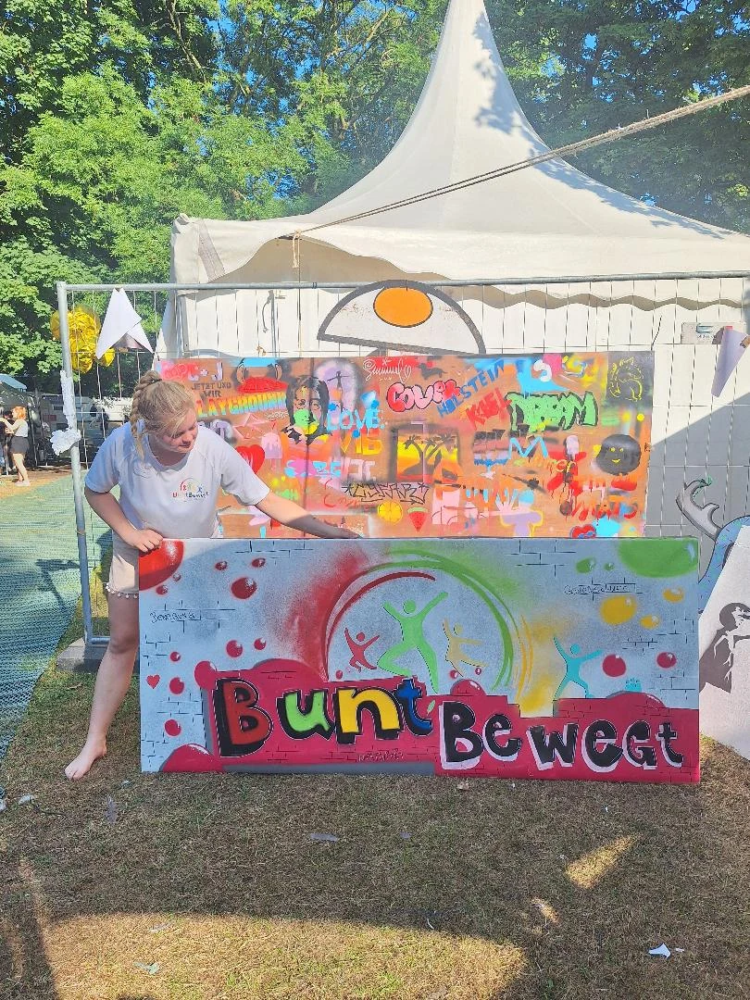
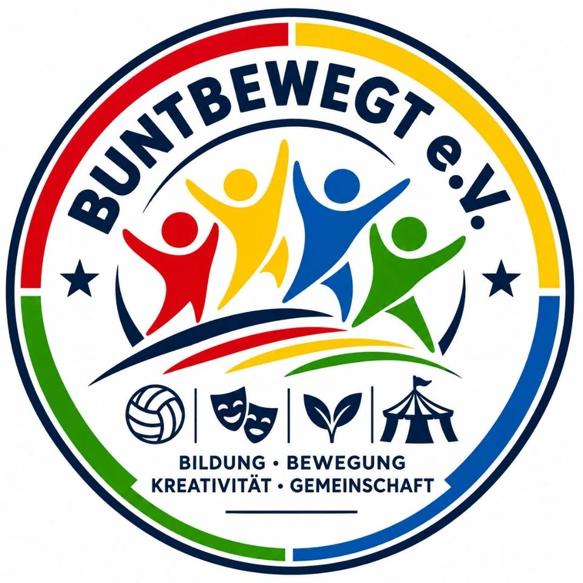
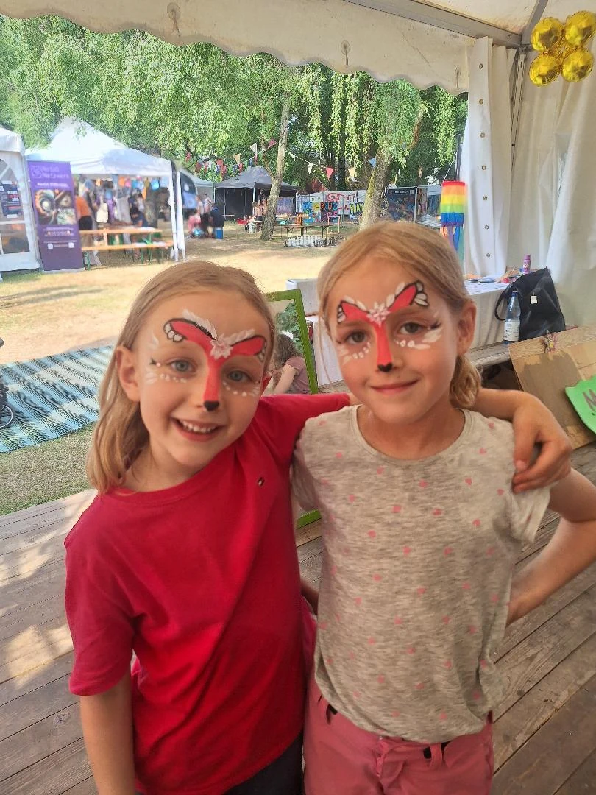

01 / START 2027UNSER ERSTES VEREINSPROJEKT
Playground zur Kieler Woche
Für die Kieler Woche 2027 planen wir ein großes ehrenamtliches Projekt mit Spiel, Bewegung und kreativen Erlebnissen.
Kieler Woche · geplant für 2027
EIN VEREINSPROJEKT FÜR KIELGründung für 2027 geplantUNSER NÄCHSTES PROJEKT · GRÜNDUNG FÜR 2027 GEPLANT
Gemeinsam Zukunft gestalten.
Wir planen die Gründung eines gemeinnützigen Vereins, der Kindern und Jugendlichen neue Möglichkeiten für Bewegung, Kreativität und Gemeinschaft eröffnet.
Wir glauben daran, dass alle Kinder Orte brauchen, an denen sie Neues ausprobieren, selbstbewusst werden und miteinander wachsen können. Genau solche Erlebnisse möchten wir gemeinsam möglich machen.
Der Verein befindet sich in Planung und ist noch nicht gegründet.
Unsere nächsten SchritteDAS HABEN WIR VOR
Wir fangen mit konkreten Projekten an und denken langfristig weiter.

01 / START 2027UNSER ERSTES VEREINSPROJEKT
Für die Kieler Woche 2027 planen wir ein großes ehrenamtliches Projekt mit Spiel, Bewegung und kreativen Erlebnissen.
Kieler Woche · geplant für 2027 02 / GEMEINSAM
02 / GEMEINSAMGEMEINSAM AKTIV
Weitere gemeinnützige Veranstaltungen und Projekte sollen folgen. Erste Kontakte gibt es zum Jugendring Kiel und zum Guddytreff.
Austausch · Partnerschaften · Ehrenamt
03 / LANGFRISTIGUNSERE GROSSE VISION
Eine Kindertageseinrichtung, in der Bewegung, Kreativität und die individuelle Entwicklung jedes Kindes im Mittelpunkt stehen.
Perspektive · Gaarden & Mettenhof FOTO AUS EINEM BISHERIGEN ANGEBOT
FOTO AUS EINEM BISHERIGEN ANGEBOTUNSERE LANGFRISTIGE VISION
Wir träumen von einer eigenen BuntBewegt-Kita mit einem bewegungsorientierten, kreativen und sozialpädagogischen Konzept.
Ein Ort, der Neugier weckt, Gemeinschaft fördert und jedes Kind in seiner Persönlichkeit begleitet.
Die Kita ist eine Zukunftsvision. Ein Standort oder Eröffnungstermin steht noch nicht fest.
SCHRITT FÜR SCHRITT
Noch befinden wir uns in der Planungsphase – und freuen uns über Menschen, die unsere Ideen mittragen.
Kontakte knüpfen, Konzepte entwickeln und Möglichkeiten gemeinsam erkunden.
Den gemeinnützigen Verein aufbauen und das erste große Ehrenamtsprojekt angehen.
Veranstaltungen, Kooperationen und langfristig die Kita-Vision weiterentwickeln.
WIR FREUEN UNS AUF DICH
Ob du mithelfen, dich austauschen oder einfach mehr erfahren möchtest: Wir freuen uns, von dir zu hören.
Jetzt Kontakt aufnehmenZusammen
bewegen
wir mehr.